Capítulo 3 (Básico da) Visualização gráfica: pacote graphics
A visualização gráfica consiste em mostrar visualmente ou padrões de distribuição de uma variável ou padrões de a associação entre duas ou mais variáveis. Os tipos de gráficos a serem utilizados depende basicamente do tipo de variável (ex. categórica ou numérica) e do número de variáveis envolvidas. Temos os gráficos univariados quando a visualização envolve uma única variável, gráfios bivariados quando a visualização envolve duas variáveis e gráficos multivariados que buscam expressar o padrão de associação entre mais de duas variáveis. Deixaremos os gráficos multivariados para outro momento e veremos aqui os tipos básicos para descrever padrões uni e bivariados.
As funções gráficas apresentadas neste tópico estão todas disponíveis no pacote graphics, que se inclui na lista dos pacotes previamente instalados no R. Não é necessário portanto preocupar-se com nenhuma instalação adicional. Estas funções possibilitam elevado controle sobre cada um dos elementos gráficos (fontes, tamanhos, cores), porém a custo de maior complexidade se temos a intensão de gerar figuras complexas. Vale ressaltar ainda que mesmo utilizando muitas nomenclaturas compatíveis para o controle de eixos, títulos, tamanho de fonte, estas funções nem sempre usam argumentos coesos entre os tipos gráficos, o que pode tornar a curva de aprendizado mais demorada. Por outro lado, estas funções fornecem conhecimentos básicos sobre a estrutura gráfica no R, permitindo resolver de forma rápida e simples muitas situações que encontramos no dia-a-dia da análise exploratória. Na próxima seção iremos tratar de outro pacote gráfico (ggplot2) que possui elevada capacidade para gerar estruturas complexas de imagem, utilizando uma estrutura mais coesa de manipulação gráfica. Também veremos novamente vários tipos gráficos no capítulo 7 quando formos falar de Estatística Descritiva.
3.1 Doubs river dataset
Para demonstrar algumas ferramentas gráficas, vamos utilizar um conjunto de dados já disponível na base de dados do R chamados Doubs River data. Na realidade, já analisamos parte deste conjunto de dados no capítulo 2, quando importamos o arquivo doubs_environment.csv. Deste ponto em diante, vamos utilizar o conjunto dados completo que está disponível no pacote ade4 (Dray, Dufour, and Thioulouse 2015).
Este conjunto de dados resulta da tese de doutorado de Verneaux (Verneaux 1973). O texto a seguir foi traduzido do site do excelente site de David Zelený sobre análise de dados multivariados em Ecologia de Comunidades ( www.davidzeleny.net).
Verneaux (Verneaux 1973) propôs o uso de espécies de peixes para caracterizar zonas ecológicas ao longo de rios e riachos europeus. O autor mostrou que as comunidades de peixes eram bons indicadores biológicos desses corpos d’água. Partindo da foz até a cabeceira, Verneaux propôs uma tipologia em quatro zonas, nomeadas a partir da predominância de uma dada espécie de peixe: trout zone, grayling zone, barbel zone e bream zone. As condições ecológicas correspondentes nestas zonas variam desde águas relativamente bem oxigenadas e oligotróficas até águas eutróficas e desprovidas de oxigênio.
Os dados foram coletados em 30 localidades ao longo do rio Doubs, próximo à fronteira da França e Suíça. O conjunto de dados que você irá importar consiste em uma lista de 4 elementos:
$env: um data frame com 30 linhas por 11 colunas, em que as linhas representam os locais de amostragem da cabeceira a foz do riacho e as colunas representam variáveis ambientais relacionadas à hidrologia, geomorfologia e química do rio.$fish: um data frame com 30 linhas por 27 colunas, em que as linhas representam os mesmo locais de amostragem e a cada coluna as abundâncias das 27 espécies de peixes capturadas.$xy: um data frame com 30 linhas por 2 colunas. As linhas novamente são os locais de amostragem e as colunas representam as coordenadas geográficas de cada ponto de amostragem.$species: um data frame com 27 linhas por 4 colunas. As linhas representam cada uma das 27 espécies capturadas e as colunas representam seus nomes científicos, nomes populares em francês, em inglês e um código abreviado.
3.1.1 Instalando o pacote ade4 e carregando os dados
Caso ainda não tenha feito, instale o pacote ade4 através do comando:
install.packages("ade4")Feito isto, carregue o pacote:
library(ade4)O conjunto de dados doubs
data(doubs)Veja o formato em lista destes dados:
class(doubs)
str(doubs)E leia a descrição do conjunto de dados para entender melhor nossas discussões a frente.
?doubsDiversos autores em ecologia de comunidades tem utilizado os Doubs dataset para exemplificar métodos e modelos de análise de dados, sobretudo multivariados. Inicialmente, vamos extrair os dados ambientais para um novo data.frame que iremos utilizar nas análises gráficas:
ambiente <- doubs$envBaseados em Borcard et al. (Borcard, Gillet, and Legendre 2018), vamos adicionar a este data frame uma nova variável categórica denominada secao com quatro níveis.
ambiente$secao <- c(rep("Seção 1", 16), rep("Seção 4", 14))
ambiente$secao[c(5,9,17)] <- "Seção 2"
ambiente$secao[23:25] <- "Seção 3"
ambiente$secao <- factor(ambiente$secao)Outra variável categórica, indicando três níveis de concentração de oxigênio em cada ponto.
ambiente$trofia <- cut(ambiente$oxy, breaks = c(0, 80, 109, 124),
labels = c("Pobre", "Médio", "Saturado"))
head(ambiente, 10)## dfs alt slo flo pH har pho nit amm oxy bdo secao trofia
## 1 3 934 6.176 84 79 45 1 20 0 122 27 Seção 1 Saturado
## 2 22 932 3.434 100 80 40 2 20 10 103 19 Seção 1 Médio
## 3 102 914 3.638 180 83 52 5 22 5 105 35 Seção 1 Médio
## 4 185 854 3.497 253 80 72 10 21 0 110 13 Seção 1 Saturado
## 5 215 849 3.178 264 81 84 38 52 20 80 62 Seção 2 Pobre
## 6 324 846 3.497 286 79 60 20 15 0 102 53 Seção 1 Médio
## 7 268 841 4.205 400 81 88 7 15 0 111 22 Seção 1 Saturado
## 8 491 792 3.258 130 81 94 20 41 12 70 81 Seção 1 Pobre
## 9 705 752 2.565 480 80 90 30 82 12 72 52 Seção 2 Pobre
## 10 990 617 4.605 1000 77 82 6 75 1 100 43 Seção 1 Médio3.2 Descrevendo os padrões de uma variável
3.2.1 Gráfico de barras
Um gráfico de barras é utilizado para verificar a contagem de cada nível de uma variável. Portanto, necessariamente deve ser aplicado a uma variável categórica. Vamos fazer um gráfico de barras para a variável trofia
Montamos uma tabela de frequencia:
tab1 <- table(ambiente$trofia)
tab1##
## Pobre Médio Saturado
## 8 14 8E em seguida mostramos esta tabela em um gráfico de barras:
barplot(tab1)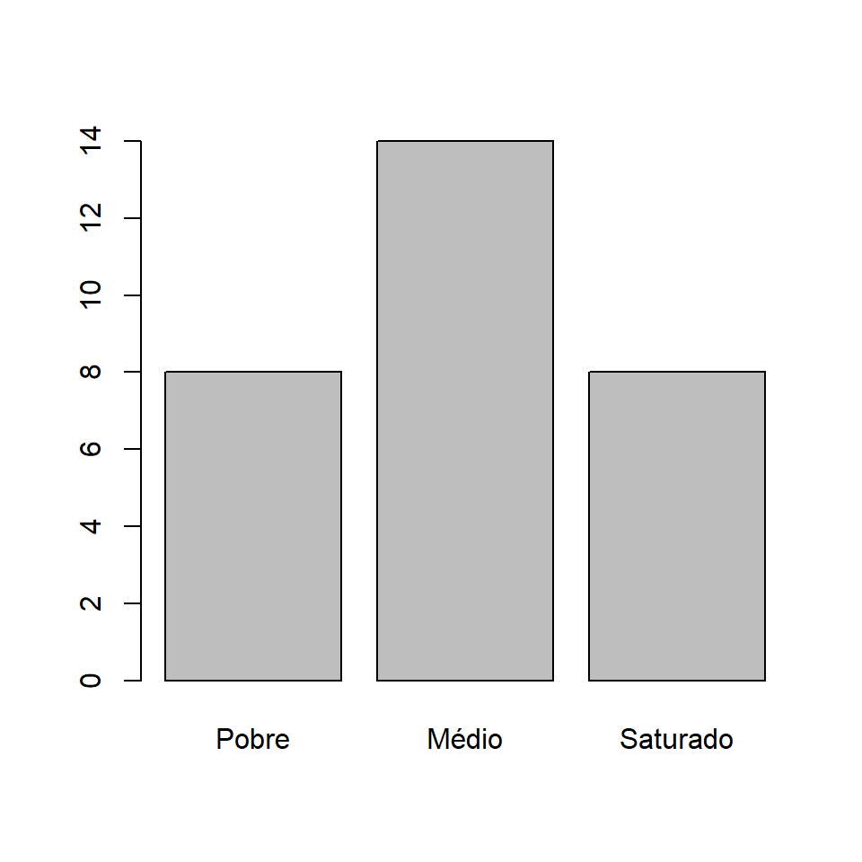
Melhorando a formatação gráfica:
barplot(tab1,
main = "Concentração de oxigênio",
ylab = "Frequência",
ylim = c(0, 18), col = "black")
box()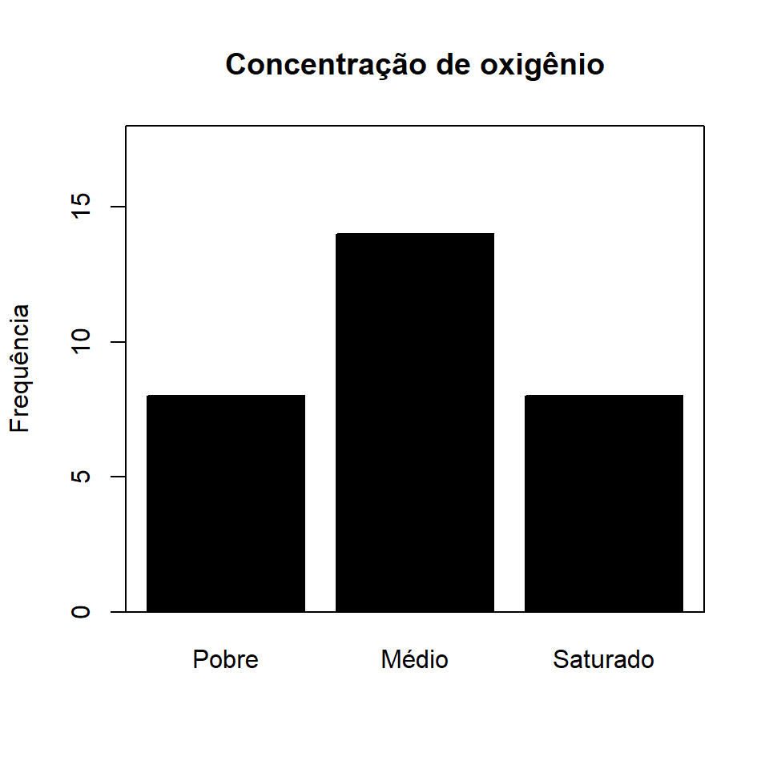
3.2.2 Histograma
Um histograma é a forma mais direta de avaliarmos o padrão de distribuição de uma variável quantitativa. Um histograma é construído a partir da divisão de uma variável em intervalos de classe e contando o número de classes dentro deste intervalo.
Veja o histograma abaixo para a oxy que expressa a concentração de oxigênio em mg/l \(\times\) 10.
hist(ambiente$oxy)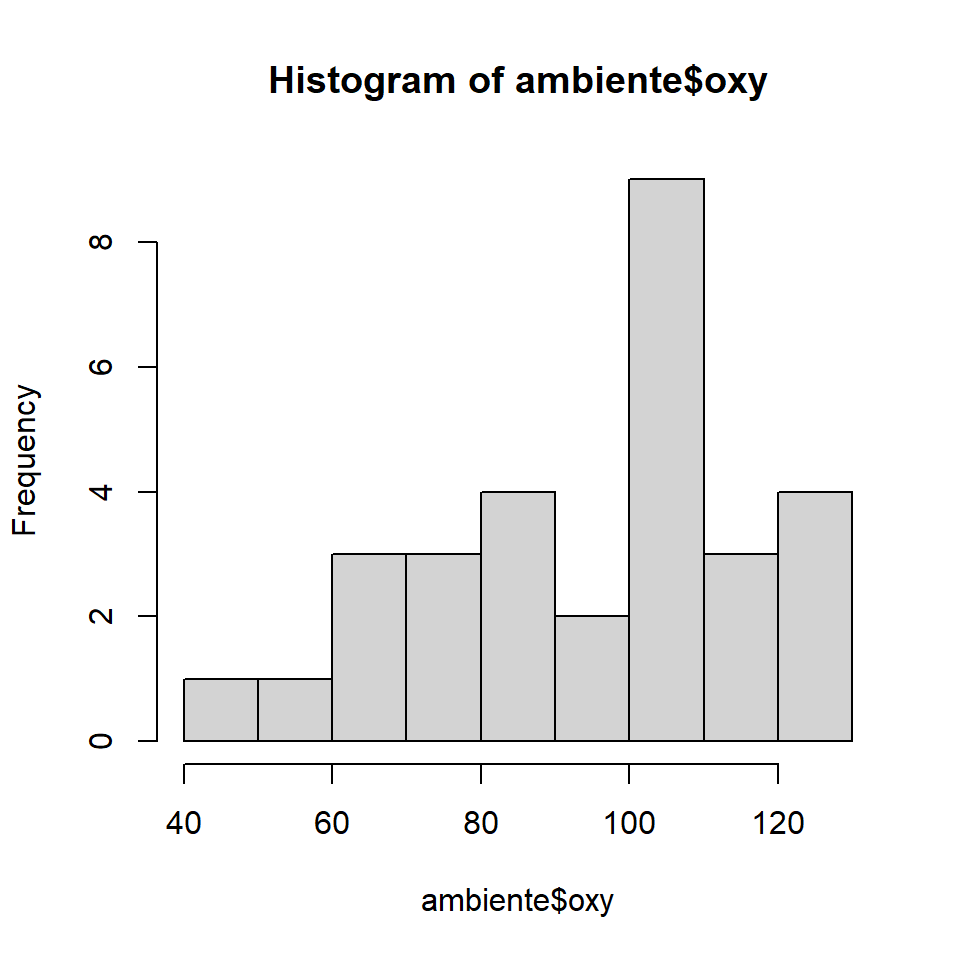
A figura mostra por exemplo que existe 1 seção com concentração entre 40 e 50 mg/l \(\times\) 10, e 2 seções com concentração entre 90 e 100 mg/l \(\times\) 10. Verifique quais são estes veículos com o comando abaixo:
ambiente[order(ambiente$oxy),]## dfs alt slo flo pH har pho nit amm oxy bdo secao trofia
## 25 3278 231 1.792 3870 79 100 422 620 180 41 167 Seção 3 Pobre
## 24 3147 241 1.386 2976 80 99 140 250 60 52 123 Seção 3 Pobre
## 26 3579 214 1.792 3910 79 94 143 300 30 62 89 Seção 4 Pobre
## 23 3043 246 2.565 2880 81 97 260 350 115 63 164 Seção 3 Pobre
## 8 491 792 3.258 130 81 94 20 41 12 70 81 Seção 1 Pobre
## 9 705 752 2.565 480 80 90 30 82 12 72 52 Seção 2 Pobre
## 27 3732 206 2.565 3960 81 90 58 300 26 72 63 Seção 4 Pobre
## 5 215 849 3.178 264 81 84 38 52 20 80 62 Seção 2 Pobre
## 28 3947 195 1.386 4320 83 100 74 400 30 81 45 Seção 4 Médio
## 30 4530 172 1.099 6900 82 109 65 160 10 82 44 Seção 4 Médio
## 21 2812 262 2.398 2720 79 85 20 220 10 90 41 Seção 4 Médio
## 29 4220 183 1.946 6770 78 110 45 162 10 90 42 Seção 4 Médio
## 22 2940 254 2.708 2790 81 88 20 162 7 91 48 Seção 4 Médio
## 10 990 617 4.605 1000 77 82 6 75 1 100 43 Seção 1 Médio
## 6 324 846 3.497 286 79 60 20 15 0 102 53 Seção 1 Médio
## 17 1985 348 1.792 2430 80 92 20 250 20 102 46 Seção 2 Médio
## 2 22 932 3.434 100 80 40 2 20 10 103 19 Seção 1 Médio
## 16 1859 375 3.045 1610 80 88 20 200 5 103 27 Seção 1 Médio
## 18 2110 332 2.197 2500 80 90 50 220 20 103 28 Seção 4 Médio
## 20 2477 286 2.197 2680 80 86 30 300 30 103 28 Seção 4 Médio
## 3 102 914 3.638 180 83 52 5 22 5 105 35 Seção 1 Médio
## 19 2246 310 1.792 2590 81 84 60 220 15 106 33 Seção 4 Médio
## 4 185 854 3.497 253 80 72 10 21 0 110 13 Seção 1 Saturado
## 7 268 841 4.205 400 81 88 7 15 0 111 22 Seção 1 Saturado
## 11 1234 483 3.738 1990 81 96 30 160 0 115 27 Seção 1 Saturado
## 15 1645 415 1.792 2300 86 86 40 100 0 117 21 Seção 1 Saturado
## 1 3 934 6.176 84 79 45 1 20 0 122 27 Seção 1 Saturado
## 12 1324 477 2.833 2000 79 86 4 50 0 122 30 Seção 1 Saturado
## 14 1522 434 2.565 2120 83 98 27 123 0 123 38 Seção 1 Saturado
## 13 1436 450 3.091 2110 81 98 6 52 0 124 24 Seção 1 SaturadoEm um histograma, a escolha do intervalo de classes determina o formato exato do gráfico. No exemplo acima, a escolha foi feita automaticamente. No entanto, podemos definir esplicitamente o intervalo desejado utilizando o argumento breaks conforme abaixo:
classes <- seq(40, 140, by = 20)
hist(ambiente$oxy, breaks = classes)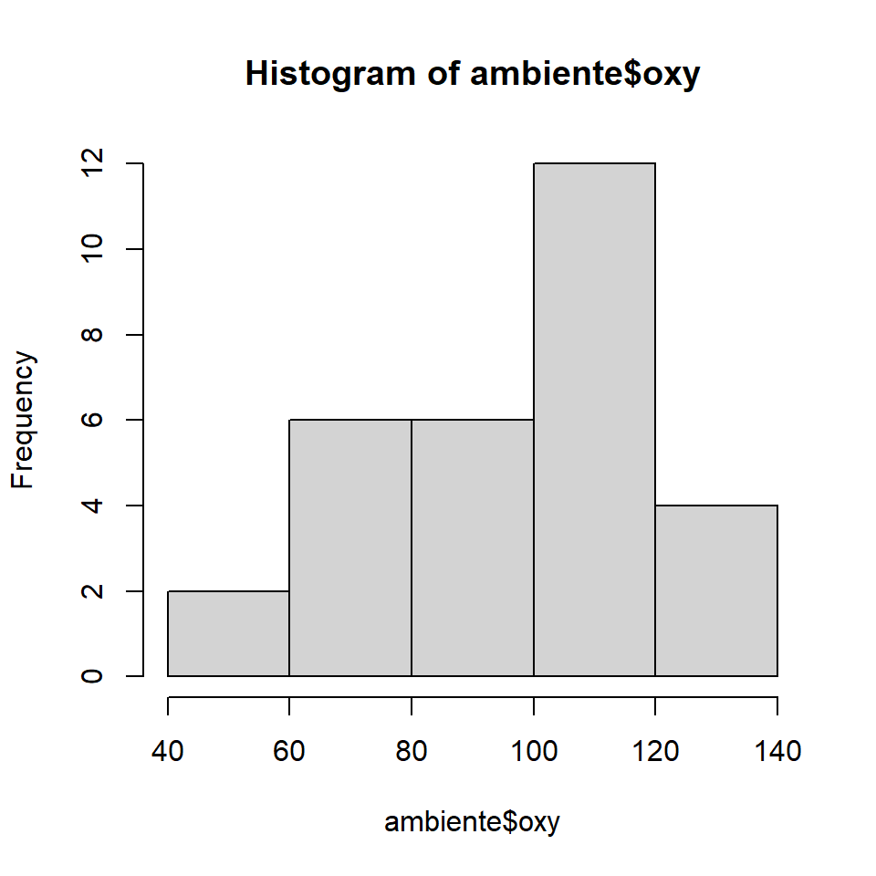
Aqui fizemos a divisão em intervalos de tamanho 20, iniciando em 40 e terminando em 140. A escolha do tamanho das classes é de certa forma arbitrária e definida para que o figura evidencie da melhor forma possível o padrão de distribuição dos dados.
3.2.3 Boxplot
Boxplots oferecem um resumo gráfico da distribuição de uma variável quantitativa. Abaixo veja um boxplot da variável oxy.
boxplot(ambiente$oxy)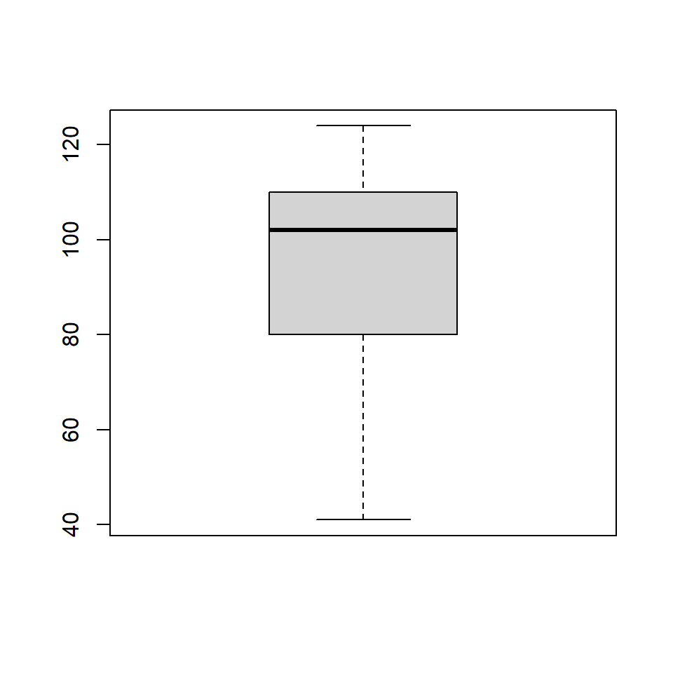
No boxplot, a linha do meio representa a mediana dos dados, os limitres das caixas representam o \(1^o\) e \(3^o\) percentis e as linhas os pontos mínimo e máximo. Podemos ver quais são estes valores com o comando:
quantile(ambiente$oxy, probs = c(0, 0.25, 0.5, 0.75, 1))## 0% 25% 50% 75% 100%
## 41.00 80.25 102.00 109.00 124.003.3 Visualizando associações entre duas variáveis
3.3.1 Gráfico de barras
Passando aos gráficos bi-variados, vamos criar um gráfico de barras combinando as variáveis categóricas secao e trofia. Como fizemos anteriormente, montamos uma tabela de frequência, porpém neste caso combinando as duas variáveis.
tab2 <- table(ambiente[,c("secao", "trofia")])
tab2## trofia
## secao Pobre Médio Saturado
## Seção 1 1 5 8
## Seção 2 2 1 0
## Seção 3 3 0 0
## Seção 4 2 8 0Neste caso, podemos fazer gráficos de barras de quatro formas distintas:
layout(mat = matrix(1:4, nrow = 2, ncol = 2, byrow = TRUE))
barplot(tab2, legend = TRUE)
barplot(tab2, legend = TRUE, beside = TRUE)
barplot(t(tab2), legend = TRUE)
barplot(t(tab2), legend = TRUE, beside = TRUE)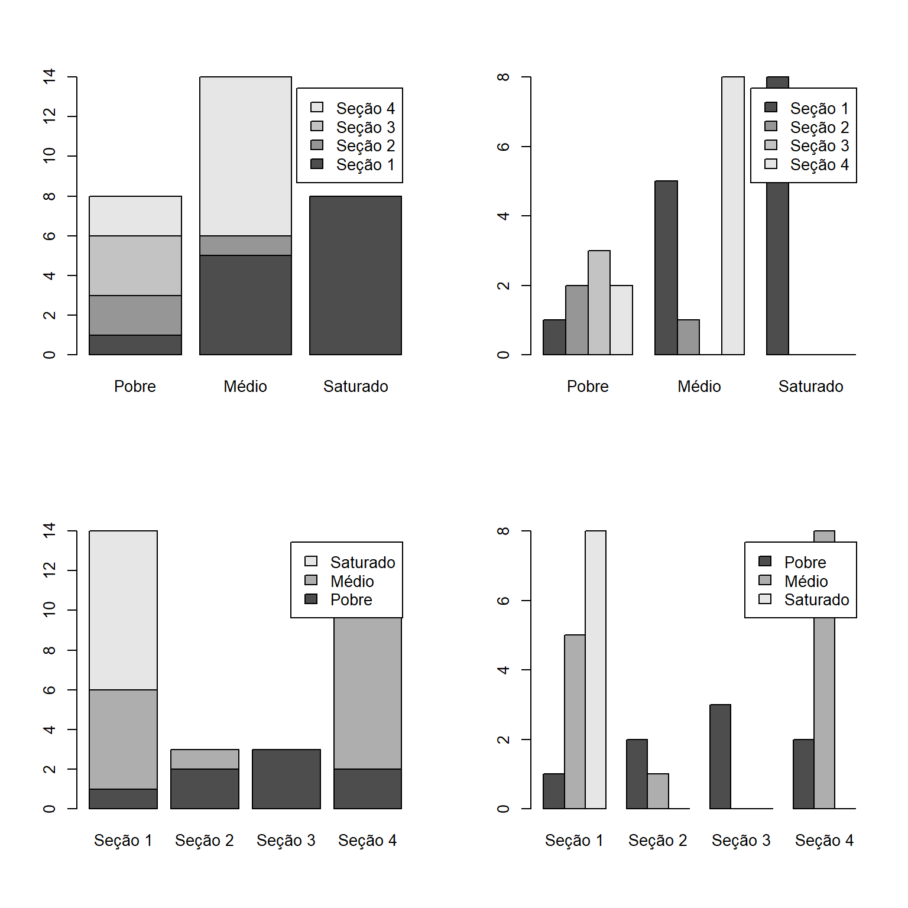
O comando acima necessita de algumas esplicações.
A função
layout(mat = matrix(1:4, nrow = 2, ncol = 2, byrow = TRUE))organiza o espaço gráfico em um formato matricial com 2 linhas por 2 colunas, permitindo a inserrção de 4 figuras. O argumentobyrow = TRUEdefine que as figuras serão adicionais linha-a-linha;A expressão
t(tab2)tem como resultado tanspor a tabela, o que consequentemente altera a referência da figura. No primeiro caso, a referência é a concentração de oxigêncio e no segundo caso, as seções;O argumento
beside = TRUEfaz com que todas as barras apareçam lado-a-lado. Caso contrário, cada barra representa uma coluna da matriztab2ou da sua transpostat(tab2);Em todos os gráficos foi adicionada uma legenda para permitir a interpretação dos gráficos;
Aqui vale melhorarmos a formatação:
cores <- 1:4
limy1 <- c(0, 17)
limy2 <- c(0, 16)
legenda <- list(cex = 0.8)
layout(mat = matrix(1:4, nrow = 2, ncol = 2, byrow = TRUE))
barplot(tab2, legend = TRUE, col = cores, ylim = limy1,
args.legend = legenda)
box()
barplot(tab2, legend = TRUE, beside = TRUE, col = cores,
ylim = limy1, args.legend = legenda)
box()
barplot(t(tab2), legend = TRUE, col = cores, ylim = limy2,
args.legend = legenda)
box()
barplot(t(tab2), legend = TRUE, beside = TRUE, col = cores,
ylim = limy2, args.legend = legenda)
box()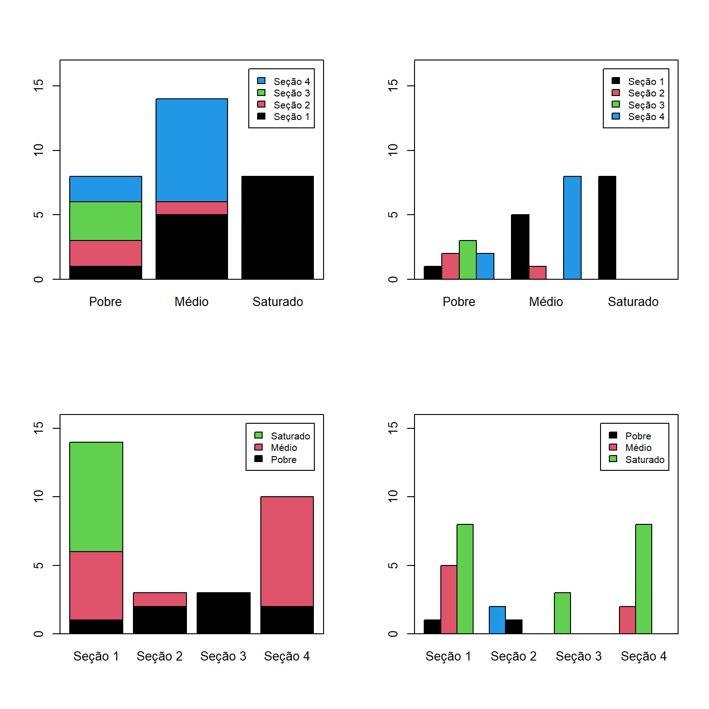
3.3.2 Boxplot
O boxplot é mais utilizado na situação a seguir em que queremos sumarizar uma variável quantitativa para diferentes níveis de uma variável categórica. Para isto, vamos associar a variável oxy à variável secao.
boxplot(oxy ~ secao, data = ambiente)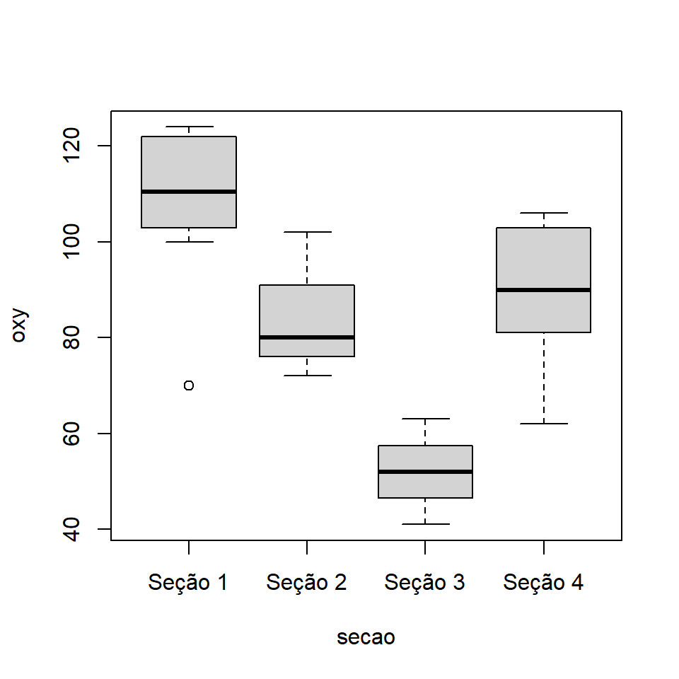
Vemos que aparentemente os pontos associados ao Seção 1 têm maiores concentrações de oxigênio (mediana = NA) e que os pontos associados à Seção 3 os menores valores (mediana = 52). É neste tipo de comparação que geralmente estamos interessados ao fazer um boxplot deste tipo.
Aqui utilizamos uma notação diferente.
Ao invés de dizermos explicitamente qual variável está no eixo
ye qual está no eixox, utilizamos o símbolo~para expressar queydepende dex. Esta notação é amplamente utilizada em modelos estatísticos como Regressão e Análise de Variância e está associada aos conceitos de variável dependente (ou reposta,y) e de variável independente (ou preditora,x). Neste caso, então a concentração de oxigênio depende da seção do rio.Ao invés de chamarmos a variável por
ambiente$oxy, utilizamos somente o nome da coluna (oxy) e adicionamos o argumentodata = ambientepara indicar em qual data frame a função irá buscar as variáveis. Deste ponto em diante iremos utilizar esta notação sempre que possível, para que você se familiarize com sua utilização na prática de ajuste de modelos estatísticos no R.
3.3.3 Gráfico de dispersão
Um gráfico de dispersão mostra a associação entre duas variáveis quantitativas. Vamos verificar a associação entre concentração de nitrato (mg/l \(\times\) 100) e a distância da foz (km \(\times\) 10). Neste caso, é fundamental definirmos quem serão as variáveis dependentes e independentes. Aqui, faz sentido pensar que a concentração de nitrato varia em função da distância da foz e não o contrário.
plot(nit ~ dfs, data = ambiente)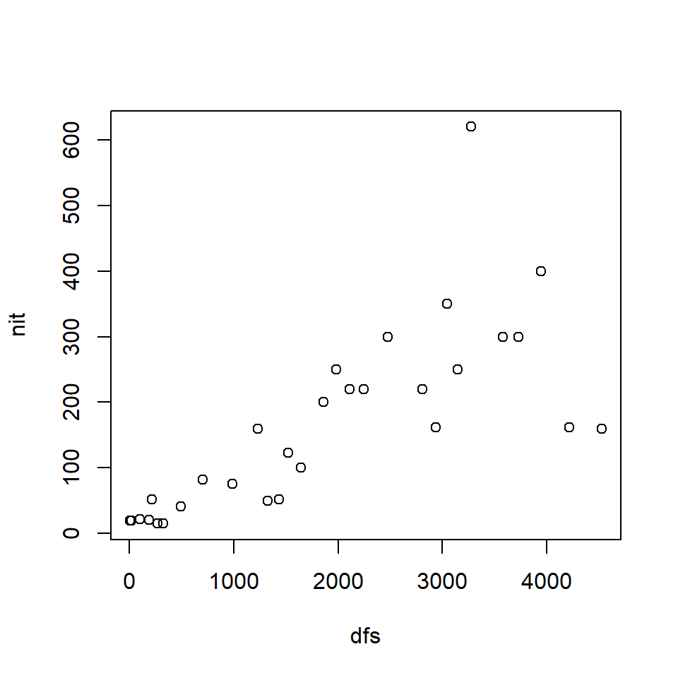
Os resultados aqui parecem expressar uma relação esperada em que a concentração de nutrientes aumenta à medida que nos aproximamos da foz de rio e riachos.
Novamente, vamos aproveitar para falar um pouco sobre formatação gráfica alterando os nomes dos eixos(argumentos xlab e ylab), tipo de ponto (argumento pch).
plot(nit ~ dfs, data = ambiente,
xlab = bquote("Vazão média mínima (m" ^3/"seg x 100)"),
ylab = bquote("Concentração de Nitrato (mg"/"l x 100)"),
pch = 19
)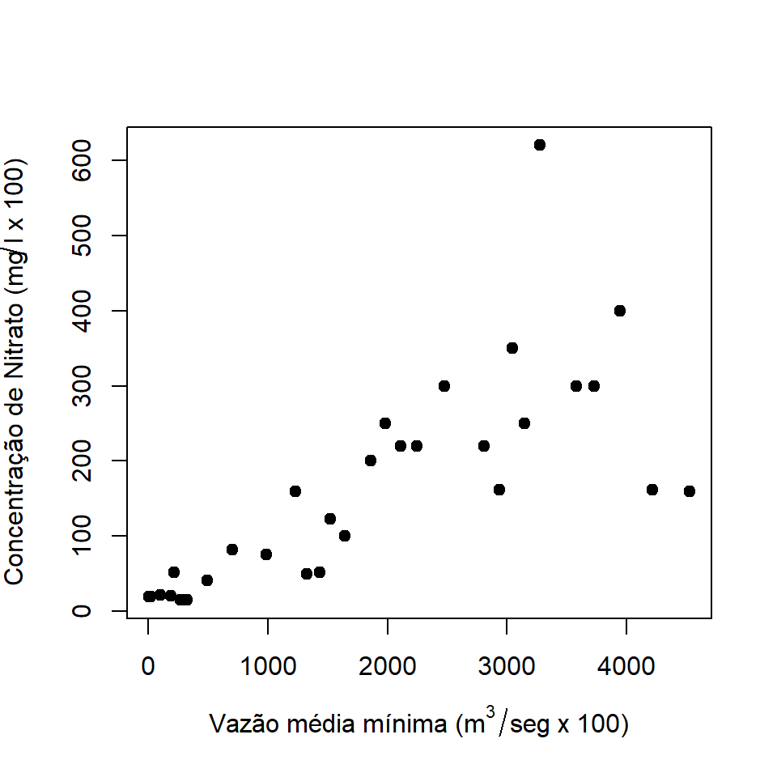
3.4 Compreendendo o ambiente por meio de suas variáveis
Em um estudo como o de Verneaux (Verneaux 1973) o objetivo e entender os sistema de riachos por meio das variáveis que escolhemos quantificar e como o modo como escolermos visualizá-las. Os gráficos vistos acima não são certamente a única forma de imcorporar variáveis em uma figura. As possibilidade de manipulação de cores, símbolos e textos no ambiente gráfico fornece formas adicionais de incluirmos uma determinada informação. Nesta seção vamos explorar um pouco melhor estas questões.
Dissemos que os pontos de amostragem foram obtidos ao longo do gradiente cabeceira-foz de um rio na França. Parte das informações que temos se referem às coordenadas geográficas destes pontos (no data frame $yx). Verifique também que a sequência dos pontos segue uma ordem crescente da distância da foz. Inicialmente, vamos plotar as coordenadas geográficas de todos os pontos utilizando um gráfico de linhas:
plot(x = doubs$xy$x, y = doubs$xy$y, type = "l",
xlab = "Coordenada em x (km)",
ylab = "Coordenada em y (km)",
col = "#4287f5", lwd = 3)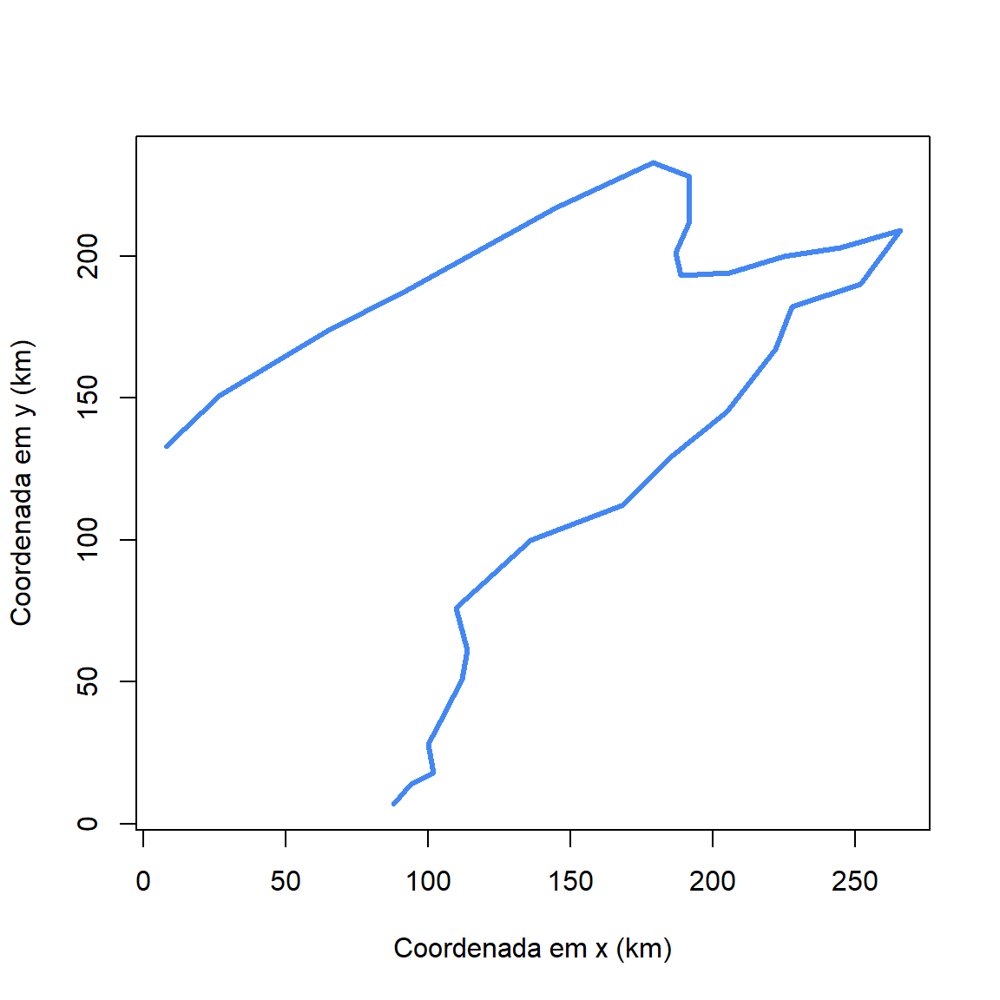
Compare, a figura com o desenho do rio Doubs.
- obs: utilizamos aqui a definição de cores em HEXADECIMAL. Você pode fazer o mesmo, escolhendo a cor desejada aqui: hex color picker.
Vamos indicar os pontos de cabeceira e foz.
pontos_extremos <- doubs$xy[which(doubs$env$dfs == min(doubs$env$dfs) |
doubs$env$dfs == max(doubs$env$dfs)),]
plot(x = doubs$xy$x, y = doubs$xy$y, type = "l",
xlab = "Coordenada em x (km)",
ylab = "Coordenada em y (km)",
col = "#4287f5", lwd = 3)
text(x = pontos_extremos$x,
y = pontos_extremos$y,
labels = c("Cabeceira", "Foz"))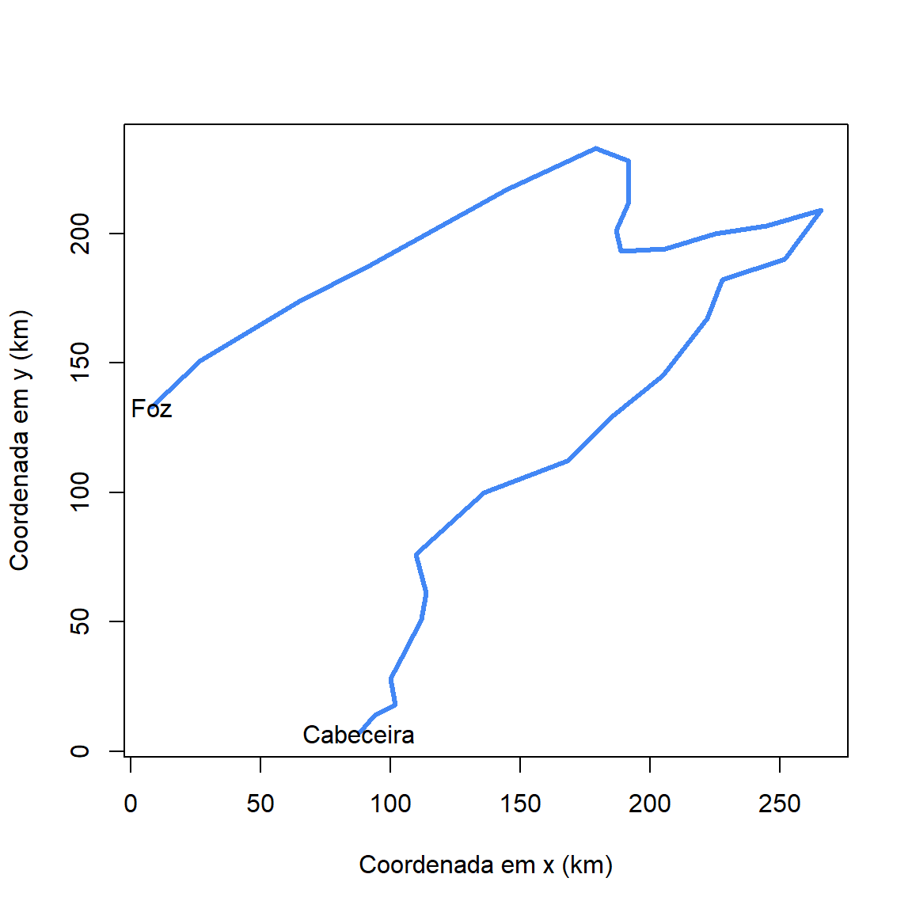
Lembre-se que definimos acima 4 trechos. Vamos ver onde estes seções se localizam plotando-os com cores distintas.
secao_cor <- as.numeric(ambiente$secao)
plot(x = doubs$xy$x, y = doubs$xy$y, type = "l",
xlab = "Coordenada em x (km)",
ylab = "Coordenada em y (km)",
col = "#4287f5", lwd = 3)
points(x = doubs$xy$x, y = doubs$xy$y, pch = 21,
bg = secao_cor, cex = 3)
legend(x = "bottomright", col = 1:4,
legend = levels(ambiente$secao), bty = "n", pch = 19)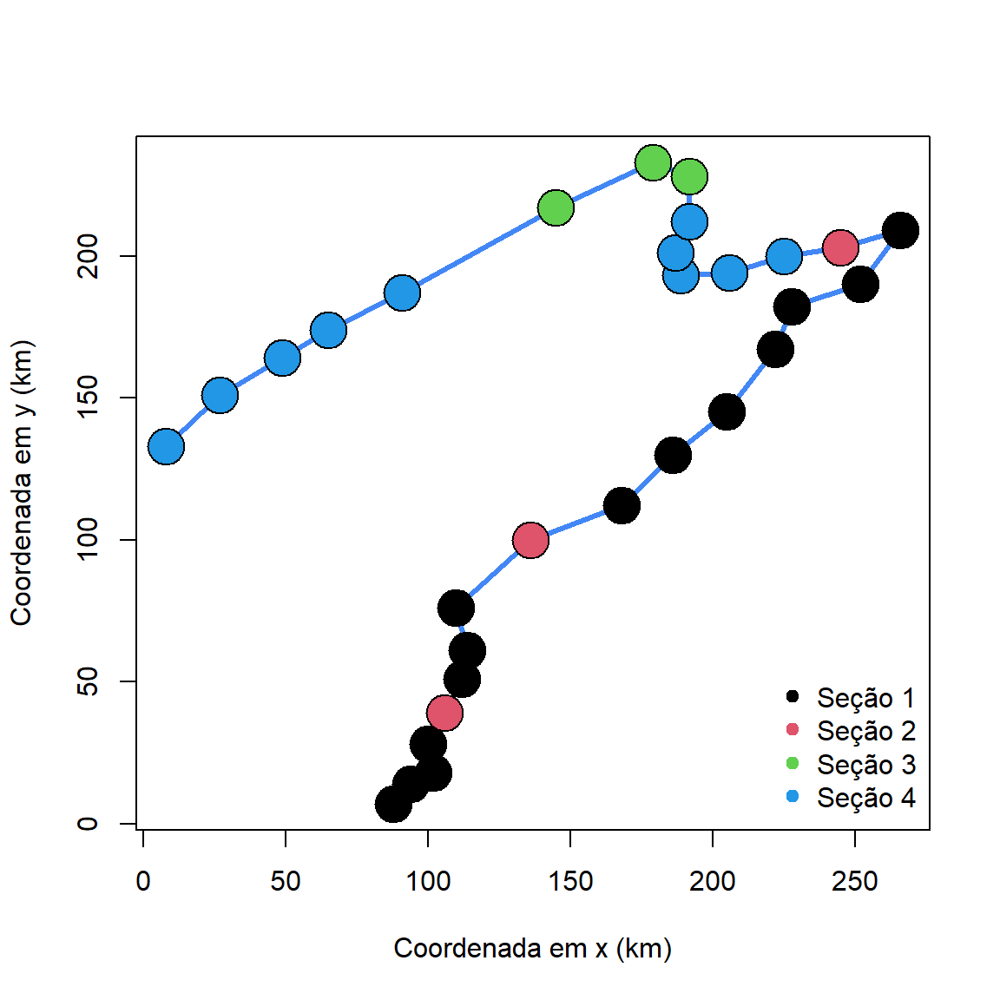
Aqui fica clara a divisão principal entre os grupos referente às seções 1 e 2 na metade superior do rio e as seções 3 e 4 na metade inferior. Para continuar explorando os dados, vamos inserir a informação sobre a concentração de amônia (amm).
secao_cor <- as.numeric(ambiente$secao) + 1
plot(x = doubs$xy$x, y = doubs$xy$y, type = "l",
xlab = "Coordenada em x (km)",
ylab = "Coordenada em y (km)",
col = "#4287f5", lwd = 3)
points(x = doubs$xy$x, y = doubs$xy$y, pch = 21,
bg = secao_cor, cex = 4)
legend(x = "bottomright", col = 1:4,
legend = levels(ambiente$secao), bty = "n", pch = 19)
text(x = doubs$xy$x, y = doubs$xy$y, labels = doubs$env$amm,
cex = 0.8, font = 2)
text(x = 55, y = 220, labels = "Concentração de amônia")
text(x = 25, y = 120, label = "Foz")
text(x = 60, y = 20, label = "Cabeceira")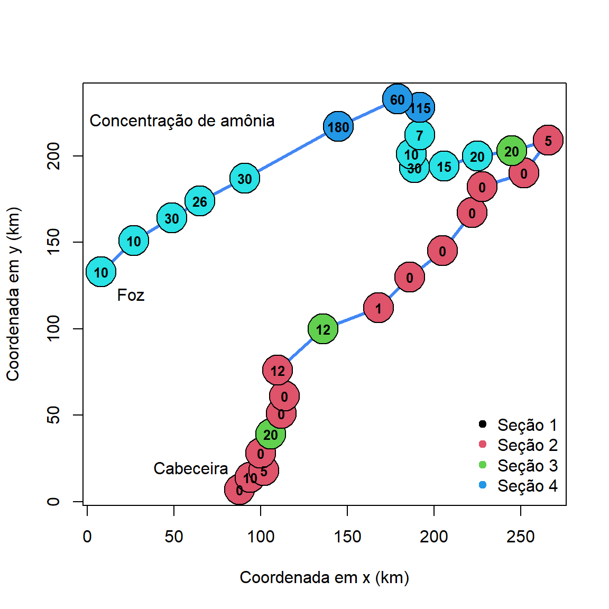
Veja, que a concentração de amônia nos pontos em azul (Seção 4) é muito superior à dos pontos ao redor. Algo similar ocorre nos pontos em verde.
Provavelmente, a concentração de amônia não é a única variável pela formação destes grupos. Você pode explorar as demais variáveis químicas para verificar se outras também apresentam padrões similares.
O ponto importante e que merece ser ressaltado, é que o gráfico acima, não se enquadra em nenhuma das categorias anteriores (uni-variados, bi-variados, gráficos de barras, boxplots, etc.). No entanto, a figura nos informa sobre três variáveis: as coordenadas geográficas, a variável categórica secao e a concentração de amônia.
- Obs: utilizamos uma série de funções novas:
text,points,legend. Para entender como elas funcionam, rode os comandos acima linha por linha e veja como cada função adiciona uma informação adicional à figura.
3.5 Mais um comentário sobre formatação gráfica no R
3.5.1 Outros argumentos
A capacidade de formatação gráfica no R é extensa. Qualquer tentativa de resumir todas elas seria incompleta. Portanto, apresento aqui somente alguns argumentos mais comuns. Rode abaixo cada uma das linhas e veja as figuras resultantes:
plot(nit ~ dfs, data = ambiente)
plot(nit ~ dfs, data = ambiente, pch = 2)
plot(nit ~ dfs, data = ambiente, pch = 19)
plot(nit ~ dfs, data = ambiente, pch = 19, type = "b")
plot(nit ~ dfs, data = ambiente, pch = 19, type = "b",
xlab = "Nitrato", ylab = "Vazão")
plot(nit ~ dfs, data = ambiente, pch = 19, type = "b",
xlab = "Nitrato", ylab = "Vazão", font.lab = 3)
plot(nit ~ dfs, data = ambiente, pch = 19, type = "l",
lty = 2)
plot(nit ~ dfs, data = ambiente, pch = 19, type = "l",
lty = 2, lwd = 3)
plot(nit ~ dfs, data = ambiente, pch = 19, type = "l",
lty = 2, lwd = 3, col = 2)3.5.2 Figuras compostas
Podemos formar figuras compostas, inserindo múltiplos gráficos. Uma das formas mais simples para isto é utilizando a função layout. Abaixo, vamos inserir 6 gráficos em um mesmo espaço.
layout(mat = matrix(1:6, nrow = 3, ncol = 2))
plot(alt ~ dfs, data = ambiente)
plot(amm ~ alt, data = ambiente)
plot(nit ~ alt, data = ambiente)
plot(pH ~ alt, data = ambiente)
plot(bdo ~ alt, data = ambiente)
plot(oxy ~ alt, data = ambiente)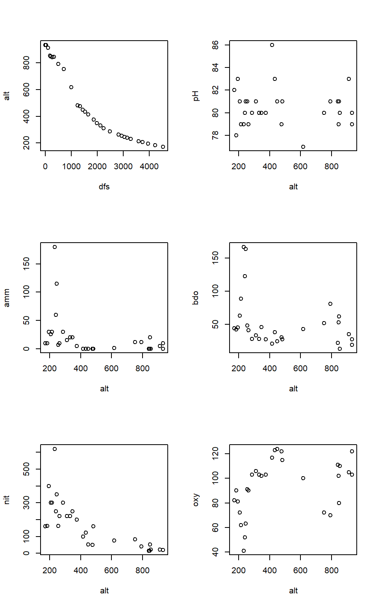
3.5.3 Exportando figuras com as funções png, tiff, jpeg e bmp
Temos melhor controle sobre a qualidade gráfica no R exportando figuras em uma variedade de formatos e resoluções. Exemplificamos esta funcionalidade abaixo com a função png. No entanto, uma breve busca nos menus de ajuda mostrará que existem funções similares para outras extensões de imagem que possume funcionamentos similares.
png(filename = "Exemplo_figura.png",
width = 15, height = 15, units = "cm",
pointsize = 10, bg = "white", res = 800)
plot(alt ~ dfs, data = ambiente, pch = 19, type = "b",
xlab = "Vazão", ylab = "Elevação")
dev.off()Lembre-se que a figura foi salva do diretório atual de sua seção de trabalho. Você pode conferir este diretório com:
getwd()Experimente alterar os argumentos width, height, pointsize, units (com "px", "in", "cm" ou "mm") e res.
As capacidades gráficas no R incluem ainda muitos outros argumentos. Alguns deles são: cores (col), tipos da fonte (font), tamanhos de símbolos (cex), dos labels (cex.lab), dos rótulos dos eixos (cex.axis), título (main), etc. Pode-se ainda inserir legendas (função legend) e textos (função text). Veja o help de cada uma destas funções e a lista de argumentos possíveis para o ambiente gráfico do R em ?par. Veja também uma demonstração com demo(graphics), demo(image), demo(persp) e demo(plotmath).
Existem diversos outros pacotes gráficos além do graphics:
ggplot2ggvisLatticehighcharterLeafletRColorBrewerPlotlysunburstRRGLdygraphs
Veremos somente uma introdução ao pacote ggplot2 no capítulo 4. Você pode buscar informações nos manuais oficias destes pacotes, mas sem dúvida a fonte mais extensa de informação são todos os usuários que dispõem de seus exemplos na rede. Assim, para aprender sobre estes pacotes ou outras técinicas gráficas no R não exite em tentar um Google do tipo quero fazer meus gráficos no R.
Boa sorte!!